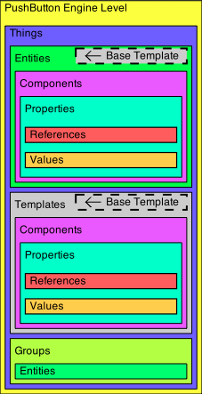

The purpose of this document is to give the reader a grasp of how PBEngine is organized, and to help explain some of the vocabulary for someone who is new to PBEngine (but not necessarily new to programming).
One of the core files in creating a game with PBEngine is the "pbelevel" (or simply "level") file. A level file defines the "things" that go into a game.
To start with, there are three things that can go into a level file. Entities, Templates, and Groups.
An Entity is an object that lives inside of the context of the game. It either represents something (such as a player or an enemy), or it manages something (such as a physics engine, or a graphical renderer).
You can think of an entity as a bare chassis, or as an empty bucket -- it's a solid framework for bolting things to, but by itself, it doesn't do much.
The beauty of PushButton Engine lies in its flexibility for modularity and code re-use. The most common module for such flexibility is the Component. Components are versatile objects that are used to add functionality and behavior to entities. Code modules are often wrapped up into one or several components. For example, a physics library might have a manager component to keep track of the physics simulation parameters, and there might be a component to add physics-based movement to game entities. In this way, the physics engine is modularized into two pieces, to give users a simple yet powerful interface to the behavior.
Components don't live in the game world by themselves -- they must be attached to an entity.
Through the Component Store, PushButton Engine makes it convenient for users to find components to use in projects, as well as providing a way for users to share their own components with other users.
Many components have configurable settings that can be defined in the level file. These settings are configured through Properties.
Properties are flexible, in that they can reference other Components, Entities, Templates or Groups by name, they can hold complex values such as arrays or custom object structures, or they can just hold simple values such as a number or a string.
When a property refers to another object in the level, it does so through a Reference that looks up another level object by its name. This is one of the most important reasons why Entities, Templates, and Groups should all have unique names, so that they can be referred to by that name when needed.
To simplify creation of game levels, game entities can inherit from Templates. See the section below for more information on what templates are.
With PB Engine, entities can override the specifications of its parent template. This means that if both the template and the entity define a property and they differ (such as if the template defines a color as blue, and the entity defines the same color as red), then the entity's value (because it is lower in the chain) will override the template's value (and the final color used in the example would be red).
Templates look almost exactly like Entities. Just like entities, they are named, they contain components, and they can even inherit from other templates. However, their chief difference is that they don't instantiate and "live" inside of the context of the game world in the same way that Entities do. They serve merely to define potential objects, as a pattern for quickly making a wide array of similar objects.
You can think of templates like cookie-cutters or blueprints -- they aren't cookies themselves, but they allow a large number of similar entities to be stamped out very quickly by a single base pattern.
This doesn't mean that all entities created from a template must be identical in every way, just as cookies cut from a common cutter can all be frosted differently, or even re-shaped afterwards. The template gives a descendant entity or template a starting point, but any properties can be overridden by children.
Inheritance from templates can simplify the structure of Level Files. For entities or templates that have similarities, they allow the developer to define the identical components of similar entities in a single place. If a game level had twenty enemy entities in it that shared a common sprite, a template that included the components that were common between all enemy entities, it could greatly simplify the level file, and make it easier to change all enemy entities at once.
When PushButton Engine needs to access a large number of entities, it often does so through Groups. Groups are just simple lists that reference entities in the level by name.